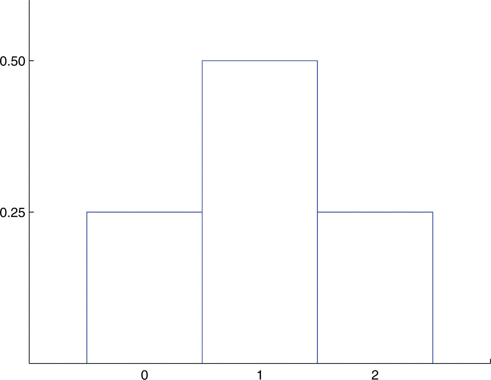
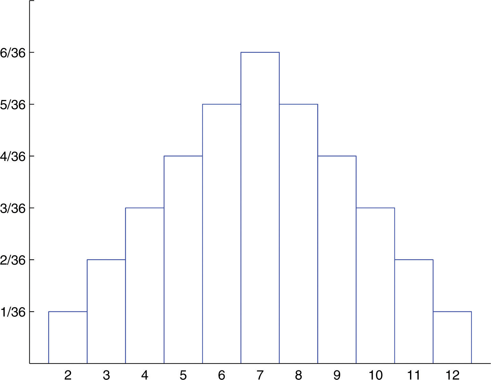
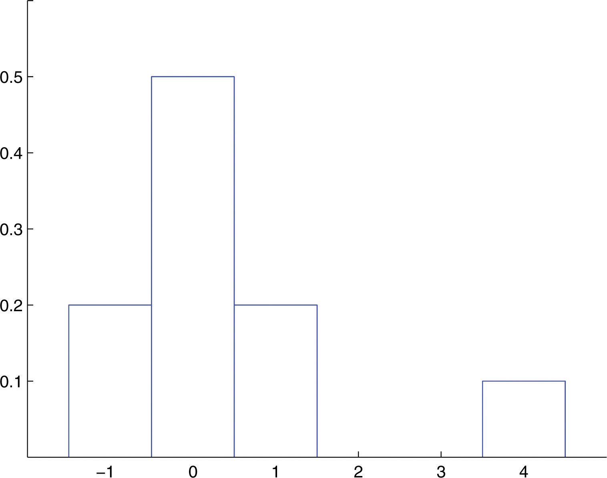

Associated to each possible value x of a discrete random variable X is the probability that X will take the value x in one trial of the experiment.
The probability distributionA list of each possible value and its probability. of a discrete random variable X is a list of each possible value of X together with the probability that X takes that value in one trial of the experiment.
The probabilities in the probability distribution of a random variable X must satisfy the following two conditions:
A fair coin is tossed twice. Let X be the number of heads that are observed.
Solution:
The possible values that X can take are 0, 1, and 2. Each of these numbers corresponds to an event in the sample space of equally likely outcomes for this experiment: X = 0 to , X = 1 to , and X = 2 to The probability of each of these events, hence of the corresponding value of X, can be found simply by counting, to give
This table is the probability distribution of X.
“At least one head” is the event X ≥ 1, which is the union of the mutually exclusive events X = 1 and X = 2. Thus
A histogram that graphically illustrates the probability distribution is given in Figure 4.1 "Probability Distribution for Tossing a Fair Coin Twice".
Figure 4.1 Probability Distribution for Tossing a Fair Coin Twice
A pair of fair dice is rolled. Let X denote the sum of the number of dots on the top faces.
Solution:
The sample space of equally likely outcomes is
The possible values for X are the numbers 2 through 12. X = 2 is the event {11}, so X = 3 is the event {12,21}, so Continuing this way we obtain the table
This table is the probability distribution of X.
The event X ≥ 9 is the union of the mutually exclusive events X = 9, X = 10, X = 11, and X = 12. Thus
Before we immediately jump to the conclusion that the probability that X takes an even value must be 0.5, note that X takes six different even values but only five different odd values. We compute
A histogram that graphically illustrates the probability distribution is given in Figure 4.2 "Probability Distribution for Tossing Two Fair Dice".
Figure 4.2 Probability Distribution for Tossing Two Fair Dice
The meanThe number , measuring its average upon repeated trials. (also called the expected valueIts mean.) of a discrete random variable X is the number
The mean of a random variable may be interpreted as the average of the values assumed by the random variable in repeated trials of the experiment.
Find the mean of the discrete random variable X whose probability distribution is
Solution:
The formula in the definition gives
A service organization in a large town organizes a raffle each month. One thousand raffle tickets are sold for $1 each. Each has an equal chance of winning. First prize is $300, second prize is $200, and third prize is $100. Let X denote the net gain from the purchase of one ticket.
Solution:
If a ticket is selected as the first prize winner, the net gain to the purchaser is the $300 prize less the $1 that was paid for the ticket, hence X = 300 − 1 = 299. There is one such ticket, so P(299) = 0.001. Applying the same “income minus outgo” principle to the second and third prize winners and to the 997 losing tickets yields the probability distribution:
Let W denote the event that a ticket is selected to win one of the prizes. Using the table
Using the formula in the definition of expected value,
The negative value means that one loses money on the average. In particular, if someone were to buy tickets repeatedly, then although he would win now and then, on average he would lose 40 cents per ticket purchased.
The concept of expected value is also basic to the insurance industry, as the following simplified example illustrates.
A life insurance company will sell a $200,000 one-year term life insurance policy to an individual in a particular risk group for a premium of $195. Find the expected value to the company of a single policy if a person in this risk group has a 99.97% chance of surviving one year.
Solution:
Let X denote the net gain to the company from the sale of one such policy. There are two possibilities: the insured person lives the whole year or the insured person dies before the year is up. Applying the “income minus outgo” principle, in the former case the value of X is 195 − 0; in the latter case it is Since the probability in the first case is 0.9997 and in the second case is , the probability distribution for X is:
Therefore
Occasionally (in fact, 3 times in 10,000) the company loses a large amount of money on a policy, but typically it gains $195, which by our computation of works out to a net gain of $135 per policy sold, on average.
The variance, , of a discrete random variable X is the number
which by algebra is equivalent to the formula
The standard deviationThe number (also computed using ), measuring its variability under repeated trials., σ, of a discrete random variable X is the square root of its variance, hence is given by the formulas
The variance and standard deviation of a discrete random variable X may be interpreted as measures of the variability of the values assumed by the random variable in repeated trials of the experiment. The units on the standard deviation match those of X.
A discrete random variable X has the following probability distribution:
A histogram that graphically illustrates the probability distribution is given in Figure 4.3 "Probability Distribution of a Discrete Random Variable".
Figure 4.3 Probability Distribution of a Discrete Random Variable
Compute each of the following quantities.
Solution:
Using the formula in the definition of μ,
Using the formula in the definition of and the value of μ that was just computed,
Determine whether or not the table is a valid probability distribution of a discrete random variable. Explain fully.
Determine whether or not the table is a valid probability distribution of a discrete random variable. Explain fully.
A discrete random variable X has the following probability distribution:
Compute each of the following quantities.
A discrete random variable X has the following probability distribution:
Compute each of the following quantities.
If each die in a pair is “loaded” so that one comes up half as often as it should, six comes up half again as often as it should, and the probabilities of the other faces are unaltered, then the probability distribution for the sum X of the number of dots on the top faces when the two are rolled is
Compute each of the following.
Borachio works in an automotive tire factory. The number X of sound but blemished tires that he produces on a random day has the probability distribution
In a hamster breeder's experience the number X of live pups in a litter of a female not over twelve months in age who has not borne a litter in the past six weeks has the probability distribution
The number X of days in the summer months that a construction crew cannot work because of the weather has the probability distribution
Let X denote the number of boys in a randomly selected three-child family. Assuming that boys and girls are equally likely, construct the probability distribution of X.
Let X denote the number of times a fair coin lands heads in three tosses. Construct the probability distribution of X.
Five thousand lottery tickets are sold for $1 each. One ticket will win $1,000, two tickets will win $500 each, and ten tickets will win $100 each. Let X denote the net gain from the purchase of a randomly selected ticket.
Seven thousand lottery tickets are sold for $5 each. One ticket will win $2,000, two tickets will win $750 each, and five tickets will win $100 each. Let X denote the net gain from the purchase of a randomly selected ticket.
An insurance company will sell a $90,000 one-year term life insurance policy to an individual in a particular risk group for a premium of $478. Find the expected value to the company of a single policy if a person in this risk group has a 99.62% chance of surviving one year.
An insurance company will sell a $10,000 one-year term life insurance policy to an individual in a particular risk group for a premium of $368. Find the expected value to the company of a single policy if a person in this risk group has a 97.25% chance of surviving one year.
An insurance company estimates that the probability that an individual in a particular risk group will survive one year is 0.9825. Such a person wishes to buy a $150,000 one-year term life insurance policy. Let C denote how much the insurance company charges such a person for such a policy.
An insurance company estimates that the probability that an individual in a particular risk group will survive one year is 0.99. Such a person wishes to buy a $75,000 one-year term life insurance policy. Let C denote how much the insurance company charges such a person for such a policy.
A roulette wheel has 38 slots. Thirty-six slots are numbered from 1 to 36; half of them are red and half are black. The remaining two slots are numbered 0 and 00 and are green. In a $1 bet on red, the bettor pays $1 to play. If the ball lands in a red slot, he receives back the dollar he bet plus an additional dollar. If the ball does not land on red he loses his dollar. Let X denote the net gain to the bettor on one play of the game.
A roulette wheel has 38 slots. Thirty-six slots are numbered from 1 to 36; the remaining two slots are numbered 0 and 00. Suppose the “number” 00 is considered not to be even, but the number 0 is still even. In a $1 bet on even, the bettor pays $1 to play. If the ball lands in an even numbered slot, he receives back the dollar he bet plus an additional dollar. If the ball does not land on an even numbered slot, he loses his dollar. Let X denote the net gain to the bettor on one play of the game.
The time, to the nearest whole minute, that a city bus takes to go from one end of its route to the other has the probability distribution shown. As sometimes happens with probabilities computed as empirical relative frequencies, probabilities in the table add up only to a value other than 1.00 because of round-off error.
Tybalt receives in the mail an offer to enter a national sweepstakes. The prizes and chances of winning are listed in the offer as: $5 million, one chance in 65 million; $150,000, one chance in 6.5 million; $5,000, one chance in 650,000; and $1,000, one chance in 65,000. If it costs Tybalt 44 cents to mail his entry, what is the expected value of the sweepstakes to him?
The number X of nails in a randomly selected 1-pound box has the probability distribution shown. Find the average number of nails per pound.
Three fair dice are rolled at once. Let X denote the number of dice that land with the same number of dots on top as at least one other die. The probability distribution for X is
Two fair dice are rolled at once. Let X denote the difference in the number of dots that appear on the top faces of the two dice. Thus for example if a one and a five are rolled, X = 4, and if two sixes are rolled, X = 0.
A fair coin is tossed repeatedly until either it lands heads or a total of five tosses have been made, whichever comes first. Let X denote the number of tosses made.
A manufacturer receives a certain component from a supplier in shipments of 100 units. Two units in each shipment are selected at random and tested. If either one of the units is defective the shipment is rejected. Suppose a shipment has 5 defective units.
Shylock enters a local branch bank at 4:30 p.m. every payday, at which time there are always two tellers on duty. The number X of customers in the bank who are either at a teller window or are waiting in a single line for the next available teller has the following probability distribution.
The owner of a proposed outdoor theater must decide whether to include a cover that will allow shows to be performed in all weather conditions. Based on projected audience sizes and weather conditions, the probability distribution for the revenue X per night if the cover is not installed is
The additional cost of the cover is $410,000. The owner will have it built if this cost can be recovered from the increased revenue the cover affords in the first ten 90-night seasons.
136
101.02